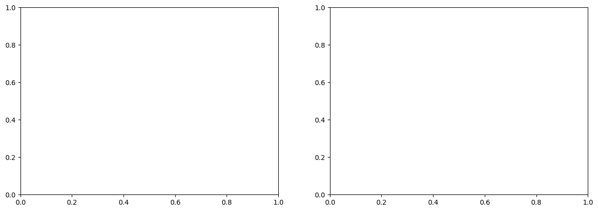

Creating DTC Glaciers EO-Native Data Cubes (L1)#
In this notebook, we focus on the creation of EO-native data cubes, referred to in the DTC Glaciers project as Level 1 (L1) data cubes.
L1 data cubes form the observational foundation of the DTC Glaciers workflow.
They consist exclusively of Earth Observation (EO) data and in-situ measurements, without the inclusion of model-derived or assimilated quantities. In line with the project design outlined in the proposal, L1 data cubes are generated for individual glaciers, providing a harmonised, analysis-ready representation of the available observations.
All variables within an L1 data cube are projected onto a common spatial grid, temporally aligned where applicable, and pre-processed to enable consistent use in subsequent stages of the DTC, including data assimilation, modelling, and validation workflows (L2 and beyond).
To illustrate the construction and content of L1 data cubes using different EO data sources, this notebook focuses on two contrasting case studies: the Brúarjökull outlet glacier of the Vatnajökull ice cap in Iceland, and Vernagtferner in the Ötztal Alps, Austria.
If required, install the DTCG API using the following command:
!pip install 'dtcg[jupyter] @ git+https://github.com/DTC-Glaciers/dtcg'
Run this command in a notebook cell.
# Imports
import dtcg.integration.oggm_bindings as oggm_bindings
import matplotlib.pyplot as plt
Downloading salem-sample-data...
rgi_id_ice = "RGI60-06.00377" # Brúarjökull
rgi_id_aut = "RGI60-11.00719" # Vernagtferner
Extract L1 data cubes from OGGM#
DTC Glaciers starts from glacier-domain datasets provided through the OGGM Shop, which aggregates products from multiple data providers and packages them into a data cube.
This step downloads the required pre-processed L1 data cubes from OGGM in the background and prepares the inputs needed to run the glacier model. This operation can take some time as it involves transferring data from the OGGM servers.
This download step is not required for end users: L1 and L2 data cubes are intended to be accessed directly as ready-to-use products (via GeoZarr). The workflow shown here illustrates the internal processes performed by the DTC Glaciers system to create and manage these data cubes.
dtcg_oggm_ice = oggm_bindings.BindingsOggmModel(rgi_id=rgi_id_ice)
dtcg_oggm_aut = oggm_bindings.BindingsOggmModel(rgi_id=rgi_id_aut)
Let’s have a look what OGGM supports out of the box:
dtcg_oggm_aut.datacube_l1
<xarray.Dataset> Size: 3MB
Dimensions: (y: 229, x: 254)
Coordinates:
* y (y) float32 916B 5.199e+06 5.199e+06 ... 5.187e+06
* x (x) float32 1kB 6.321e+05 6.322e+05 ... 6.45e+05
Data variables: (12/14)
topo (y, x) float32 233kB 1.742e+03 ... 2.256e+03
topo_smoothed (y, x) float32 233kB 1.725e+03 ... 2.283e+03
topo_valid_mask (y, x) int8 58kB 1 1 1 1 1 1 1 1 ... 1 1 1 1 1 1 1
glacier_mask (y, x) int8 58kB 0 0 0 0 0 0 0 0 ... 0 0 0 0 0 0 0
glacier_ext (y, x) int8 58kB 0 0 0 0 0 0 0 0 ... 0 0 0 0 0 0 0
consensus_ice_thickness (y, x) float32 233kB nan nan nan ... nan nan nan
... ...
itslive_vy (y, x) float32 233kB -0.09633 -0.09943 ... 0.0
millan_ice_thickness (y, x) float32 233kB nan nan nan ... nan nan nan
millan_v (y, x) float32 233kB nan nan nan ... nan nan nan
millan_vx (y, x) float32 233kB nan nan nan ... nan nan nan
millan_vy (y, x) float32 233kB nan nan nan ... nan nan nan
hugonnet_dhdt (y, x) float32 233kB 0.1893 0.1624 ... 0.001232
Attributes:
author: OGGM
author_info: Open Global Glacier Model
pyproj_srs: +proj=utm +zone=32 +datum=WGS84 +units=m +no_defs
max_h_dem: 3737.275
min_h_dem: 1701.9393
max_h_glacier: 3574.82
min_h_glacier: 2794.6978
glacier_attributes: {'rgi_id': 'RGI60-11.00719', 'glims_id': 'G010818E46...
RGI-ID: RGI60-11.00719A central element of each data cube is the glacier outline which defines the spatial domain of the glacier.
The data cube domain is constructed by adding a buffer around this outline to ensure full coverage of the glacier and its immediate surroundings.
In the current implementation, we rely on Randolph Glacier Inventory (RGI) version 6 outlines.
This choice is driven by data availability and consistency, as most global glacier datasets currently in use have been processed based on RGI v6 outlines.
In future developments, the DTC Glaciers workflow is expected to transition to RGI version 7 as data products and community standards evolve.
Let’s have a look at the glacier outline used in this example:
glacier_mask_aut = dtcg_oggm_aut.datacube_l1.glacier_mask
glacier_mask_aut.plot();

The data cubes already contain topographic information from the Copernicus DEM – Global and European Digital Elevation Model:
dtcg_oggm_aut.datacube_l1.topo.plot();

As well as:
Ice thickness data from Farinotti et al. (2019) (consensus estimate)
Elevation change data from Hugonnet et al. (2021)
Ice velocity data from ITS_LIVE
Ice velocity and ice thickness data from Millan et al. (2022)

Enhancing OGGM data cubes with new observations#
CryoTEMPO-EOLIS derived from CryoSat-2#
We developed a method to add four CryoTEMPO-EOLIS variables derived from CryoSat-2 observations to the L1 data cubes.
Variable |
Dims |
Description |
|---|---|---|
|
|
Time series of spatial maps of elevation change since January 2011. |
|
|
Uncertainty (σ) for the gridded elevation-change maps. |
|
|
Spatially aggregated 1D elevation-change series since January 2011. |
|
|
Uncertainty (σ) for the aggregated series. |
To use this on your own laptop, you need to register on the CryoTEMPO-EOLIS website and obtain an API key. You then need to provide this key to DTC Glaciers in the following way:
# import os
# os.environ["SPECKLIA_API_KEY"] = ENTER YOUR SPECKLIA API KEY HERE
You can add the data using add_data together with DatacubeCryotempoEolis. This step can take some time, as up-to-date data are downloaded from the CryoTEMPO-EOLIS server and reprojected to the L1 data cubes.
from dtcg.datacube.cryotempo_eolis import DatacubeCryotempoEolis
dtcg_oggm_ice.add_data(DatacubeCryotempoEolis)
dtcg_oggm_ice.datacube_l1
---------------------------------------------------------------------------
RemoteDisconnected Traceback (most recent call last)
File /opt/hostedtoolcache/Python/3.11.14/x64/lib/python3.11/site-packages/urllib3/connectionpool.py:787, in HTTPConnectionPool.urlopen(self, method, url, body, headers, retries, redirect, assert_same_host, timeout, pool_timeout, release_conn, chunked, body_pos, preload_content, decode_content, **response_kw)
786 # Make the request on the HTTPConnection object
--> 787 response = self._make_request(
788 conn,
789 method,
790 url,
791 timeout=timeout_obj,
792 body=body,
793 headers=headers,
794 chunked=chunked,
795 retries=retries,
796 response_conn=response_conn,
797 preload_content=preload_content,
798 decode_content=decode_content,
799 **response_kw,
800 )
802 # Everything went great!
File /opt/hostedtoolcache/Python/3.11.14/x64/lib/python3.11/site-packages/urllib3/connectionpool.py:534, in HTTPConnectionPool._make_request(self, conn, method, url, body, headers, retries, timeout, chunked, response_conn, preload_content, decode_content, enforce_content_length)
533 try:
--> 534 response = conn.getresponse()
535 except (BaseSSLError, OSError) as e:
File /opt/hostedtoolcache/Python/3.11.14/x64/lib/python3.11/site-packages/urllib3/connection.py:571, in HTTPConnection.getresponse(self)
570 # Get the response from http.client.HTTPConnection
--> 571 httplib_response = super().getresponse()
573 try:
File /opt/hostedtoolcache/Python/3.11.14/x64/lib/python3.11/http/client.py:1395, in HTTPConnection.getresponse(self)
1394 try:
-> 1395 response.begin()
1396 except ConnectionError:
File /opt/hostedtoolcache/Python/3.11.14/x64/lib/python3.11/http/client.py:325, in HTTPResponse.begin(self)
324 while True:
--> 325 version, status, reason = self._read_status()
326 if status != CONTINUE:
File /opt/hostedtoolcache/Python/3.11.14/x64/lib/python3.11/http/client.py:294, in HTTPResponse._read_status(self)
291 if not line:
292 # Presumably, the server closed the connection before
293 # sending a valid response.
--> 294 raise RemoteDisconnected("Remote end closed connection without"
295 " response")
296 try:
RemoteDisconnected: Remote end closed connection without response
During handling of the above exception, another exception occurred:
ProtocolError Traceback (most recent call last)
File /opt/hostedtoolcache/Python/3.11.14/x64/lib/python3.11/site-packages/requests/adapters.py:644, in HTTPAdapter.send(self, request, stream, timeout, verify, cert, proxies)
643 try:
--> 644 resp = conn.urlopen(
645 method=request.method,
646 url=url,
647 body=request.body,
648 headers=request.headers,
649 redirect=False,
650 assert_same_host=False,
651 preload_content=False,
652 decode_content=False,
653 retries=self.max_retries,
654 timeout=timeout,
655 chunked=chunked,
656 )
658 except (ProtocolError, OSError) as err:
File /opt/hostedtoolcache/Python/3.11.14/x64/lib/python3.11/site-packages/urllib3/connectionpool.py:841, in HTTPConnectionPool.urlopen(self, method, url, body, headers, retries, redirect, assert_same_host, timeout, pool_timeout, release_conn, chunked, body_pos, preload_content, decode_content, **response_kw)
839 new_e = ProtocolError("Connection aborted.", new_e)
--> 841 retries = retries.increment(
842 method, url, error=new_e, _pool=self, _stacktrace=sys.exc_info()[2]
843 )
844 retries.sleep()
File /opt/hostedtoolcache/Python/3.11.14/x64/lib/python3.11/site-packages/urllib3/util/retry.py:490, in Retry.increment(self, method, url, response, error, _pool, _stacktrace)
489 if read is False or method is None or not self._is_method_retryable(method):
--> 490 raise reraise(type(error), error, _stacktrace)
491 elif read is not None:
File /opt/hostedtoolcache/Python/3.11.14/x64/lib/python3.11/site-packages/urllib3/util/util.py:38, in reraise(tp, value, tb)
37 if value.__traceback__ is not tb:
---> 38 raise value.with_traceback(tb)
39 raise value
File /opt/hostedtoolcache/Python/3.11.14/x64/lib/python3.11/site-packages/urllib3/connectionpool.py:787, in HTTPConnectionPool.urlopen(self, method, url, body, headers, retries, redirect, assert_same_host, timeout, pool_timeout, release_conn, chunked, body_pos, preload_content, decode_content, **response_kw)
786 # Make the request on the HTTPConnection object
--> 787 response = self._make_request(
788 conn,
789 method,
790 url,
791 timeout=timeout_obj,
792 body=body,
793 headers=headers,
794 chunked=chunked,
795 retries=retries,
796 response_conn=response_conn,
797 preload_content=preload_content,
798 decode_content=decode_content,
799 **response_kw,
800 )
802 # Everything went great!
File /opt/hostedtoolcache/Python/3.11.14/x64/lib/python3.11/site-packages/urllib3/connectionpool.py:534, in HTTPConnectionPool._make_request(self, conn, method, url, body, headers, retries, timeout, chunked, response_conn, preload_content, decode_content, enforce_content_length)
533 try:
--> 534 response = conn.getresponse()
535 except (BaseSSLError, OSError) as e:
File /opt/hostedtoolcache/Python/3.11.14/x64/lib/python3.11/site-packages/urllib3/connection.py:571, in HTTPConnection.getresponse(self)
570 # Get the response from http.client.HTTPConnection
--> 571 httplib_response = super().getresponse()
573 try:
File /opt/hostedtoolcache/Python/3.11.14/x64/lib/python3.11/http/client.py:1395, in HTTPConnection.getresponse(self)
1394 try:
-> 1395 response.begin()
1396 except ConnectionError:
File /opt/hostedtoolcache/Python/3.11.14/x64/lib/python3.11/http/client.py:325, in HTTPResponse.begin(self)
324 while True:
--> 325 version, status, reason = self._read_status()
326 if status != CONTINUE:
File /opt/hostedtoolcache/Python/3.11.14/x64/lib/python3.11/http/client.py:294, in HTTPResponse._read_status(self)
291 if not line:
292 # Presumably, the server closed the connection before
293 # sending a valid response.
--> 294 raise RemoteDisconnected("Remote end closed connection without"
295 " response")
296 try:
ProtocolError: ('Connection aborted.', RemoteDisconnected('Remote end closed connection without response'))
During handling of the above exception, another exception occurred:
ConnectionError Traceback (most recent call last)
Cell In[9], line 3
1 from dtcg.datacube.cryotempo_eolis import DatacubeCryotempoEolis
----> 3 dtcg_oggm_ice.add_data(DatacubeCryotempoEolis)
5 dtcg_oggm_ice.datacube_l1
File /opt/hostedtoolcache/Python/3.11.14/x64/lib/python3.11/site-packages/dtcg/integration/oggm_bindings.py:429, in BindingsOggmModel.add_data(self, datacube_manager, **kwargs)
428 def add_data(self, datacube_manager, **kwargs):
--> 429 self.datacube_l1 = datacube_manager().add_data(
430 datacube=self.datacube_l1, gdir=self.gdir, **kwargs
431 )
File /opt/hostedtoolcache/Python/3.11.14/x64/lib/python3.11/site-packages/dtcg/datacube/cryotempo_eolis.py:131, in DatacubeCryotempoEolis.add_data(self, datacube, gdir)
115 """Add gridded EOLIS data from a glacier directory to a datacube.
116
117 Every datacube must support this method. It should be able to add
(...) 127 xr.Dataset
128 """
129 # Whilst this is redundant here, other modules implement this
130 # differently. Do not refactor this method.
--> 131 return self.retrieve_prepare_eolis_gridded_data(
132 oggm_ds=datacube, grid=gdir.grid
133 )
File /opt/hostedtoolcache/Python/3.11.14/x64/lib/python3.11/site-packages/dtcg/datacube/cryotempo_eolis.py:473, in DatacubeCryotempoEolis.retrieve_prepare_eolis_gridded_data(self, oggm_ds, grid)
468 if specklia_api_key is None:
469 specklia_api_key = input(
470 "To access the EOLIS dataset, please generate a Specklia API key using https://specklia.earthwave.co.uk/ApiKeys and paste it here:"
471 )
472 eolis_gridded_data, eolis_gridded_sources, eolis_gridded_dataset = (
--> 473 self.retrieve_data_from_specklia(
474 specklia_query_polygon,
475 self.SPECKLIA_DATASET_NAME_EOLIS_ELEVATION_CHANGE,
476 specklia_api_key,
477 )
478 )
480 elevation_change_var_name = "elevation_change"
481 elevation_change_sigma_var_name = "elevation_change_sigma"
File /opt/hostedtoolcache/Python/3.11.14/x64/lib/python3.11/site-packages/dtcg/datacube/cryotempo_eolis.py:385, in DatacubeCryotempoEolis.retrieve_data_from_specklia(self, query_polygon, specklia_data_set_name, specklia_api_key, min_timestamp, max_timestamp)
382 # query the data from Specklia
383 query_start_time = perf_counter()
--> 385 gdf, source_info = client.query_dataset(
386 dataset_id=specklia_dataset_info["dataset_id"],
387 epsg4326_polygon=query_polygon,
388 min_datetime=min_timestamp,
389 max_datetime=max_timestamp,
390 )
392 logger.debug(
393 f"Specklia query took {perf_counter()-query_start_time:.2f} seconds"
394 )
396 return gdf, source_info, specklia_dataset_info
File /opt/hostedtoolcache/Python/3.11.14/x64/lib/python3.11/site-packages/specklia/client.py:251, in Specklia.query_dataset(self, dataset_id, epsg4326_polygon, min_datetime, max_datetime, columns_to_return, additional_filters, source_information_only)
240 request = {
241 "dataset_id": dataset_id,
242 "min_timestamp": int(min_datetime.timestamp()),
(...) 247 "source_information_only": source_information_only,
248 }
250 # submit the query
--> 251 response = self._request("POST", "query", data=json.dumps(request))
253 _log.info("queried dataset with ID %s.", dataset_id)
255 response_dict = response.json()
File /opt/hostedtoolcache/Python/3.11.14/x64/lib/python3.11/site-packages/specklia/client.py:94, in Specklia._request(self, method, endpoint, params, json, data)
86 def _request(
87 self: Specklia,
88 method: Literal["GET", "POST", "PUT", "DELETE"],
(...) 92 data: str | None = None,
93 ) -> requests.Response:
---> 94 response = requests.request(
95 method,
96 self.server_url + "/" + endpoint,
97 headers={"Authorization": "Bearer " + self.auth_token},
98 params=params,
99 json=json,
100 data=data,
101 )
102 _check_response_ok(response)
103 return response
File /opt/hostedtoolcache/Python/3.11.14/x64/lib/python3.11/site-packages/requests/api.py:59, in request(method, url, **kwargs)
55 # By using the 'with' statement we are sure the session is closed, thus we
56 # avoid leaving sockets open which can trigger a ResourceWarning in some
57 # cases, and look like a memory leak in others.
58 with sessions.Session() as session:
---> 59 return session.request(method=method, url=url, **kwargs)
File /opt/hostedtoolcache/Python/3.11.14/x64/lib/python3.11/site-packages/requests/sessions.py:589, in Session.request(self, method, url, params, data, headers, cookies, files, auth, timeout, allow_redirects, proxies, hooks, stream, verify, cert, json)
584 send_kwargs = {
585 "timeout": timeout,
586 "allow_redirects": allow_redirects,
587 }
588 send_kwargs.update(settings)
--> 589 resp = self.send(prep, **send_kwargs)
591 return resp
File /opt/hostedtoolcache/Python/3.11.14/x64/lib/python3.11/site-packages/requests/sessions.py:703, in Session.send(self, request, **kwargs)
700 start = preferred_clock()
702 # Send the request
--> 703 r = adapter.send(request, **kwargs)
705 # Total elapsed time of the request (approximately)
706 elapsed = preferred_clock() - start
File /opt/hostedtoolcache/Python/3.11.14/x64/lib/python3.11/site-packages/requests/adapters.py:659, in HTTPAdapter.send(self, request, stream, timeout, verify, cert, proxies)
644 resp = conn.urlopen(
645 method=request.method,
646 url=url,
(...) 655 chunked=chunked,
656 )
658 except (ProtocolError, OSError) as err:
--> 659 raise ConnectionError(err, request=request)
661 except MaxRetryError as e:
662 if isinstance(e.reason, ConnectTimeoutError):
663 # TODO: Remove this in 3.0.0: see #2811
ConnectionError: ('Connection aborted.', RemoteDisconnected('Remote end closed connection without response'))
Let’s visualise these new data:
---------------------------------------------------------------------------
AttributeError Traceback (most recent call last)
Cell In[10], line 7
4 datacube_decoded = xr.decode_cf(dtcg_oggm_ice.datacube_l1)
6 fig, axes = plt.subplots(ncols=2, nrows=1, figsize=(15, 5))
----> 7 datacube_decoded.eolis_gridded_elevation_change.isel(t=-1).plot(ax=axes[0], cmap="RdBu")
8 datacube_decoded.eolis_gridded_elevation_change_sigma.isel(t=-1).plot(ax=axes[1])
9 for ax in axes:
File /opt/hostedtoolcache/Python/3.11.14/x64/lib/python3.11/site-packages/xarray/core/common.py:306, in AttrAccessMixin.__getattr__(self, name)
304 with suppress(KeyError):
305 return source[name]
--> 306 raise AttributeError(
307 f"{type(self).__name__!r} object has no attribute {name!r}"
308 )
AttributeError: 'Dataset' object has no attribute 'eolis_gridded_elevation_change'

Glacier surface classification from Sentinel-2#
For DTC Glaciers, ENVEO provides a 10 m gridded glacier surface classification product derived from Sentinel-2 data. This dataset can be added to the L1 data cubes in the same way as shown above.
Variable |
Dims |
Description |
|---|---|---|
|
|
Glacier surface classification. |
|
|
Glacier surface classification uncertainty. |
|
|
Snowline altitude derived from glacier surface classification for three different snow cover area fractions (25%, 50% and 75%) per 30m elevation band. |
from dtcg.datacube.surface_type import DatacubeSurfaceType
dtcg_oggm_aut.add_data(DatacubeSurfaceType)
dtcg_oggm_aut.datacube_l1
<xarray.Dataset> Size: 79MB
Dimensions: (y: 229, x: 254, t_sfc_type: 82, snowcover_frac: 3)
Coordinates:
* y (y) float32 916B 5.199e+06 5.199e+06 ... 5.187e+06
* x (x) float32 1kB 6.321e+05 6.322e+05 ... 6.45e+05
* t_sfc_type (t_sfc_type) int64 656B 1435968000 ... 1632528000
* snowcover_frac (snowcover_frac) float64 24B 0.25 0.5 0.75
Data variables: (12/17)
topo (y, x) float32 233kB 1.742e+03 ... 2.256e+03
topo_smoothed (y, x) float32 233kB 1.725e+03 ... 2.283e+03
topo_valid_mask (y, x) int8 58kB 1 1 1 1 1 1 1 1 ... 1 1 1 1 1 1 1
glacier_mask (y, x) int8 58kB 0 0 0 0 0 0 0 0 ... 0 0 0 0 0 0 0
glacier_ext (y, x) int8 58kB 0 0 0 0 0 0 0 0 ... 0 0 0 0 0 0 0
consensus_ice_thickness (y, x) float32 233kB nan nan nan ... nan nan nan
... ...
millan_vx (y, x) float32 233kB nan nan nan ... nan nan nan
millan_vy (y, x) float32 233kB nan nan nan ... nan nan nan
hugonnet_dhdt (y, x) float32 233kB 0.1893 0.1624 ... 0.001232
sfc_type_data (t_sfc_type, y, x) float64 38MB nan nan ... nan nan
sfc_type_uncertainty (t_sfc_type, y, x) float64 38MB nan nan ... nan nan
sfc_type_snowline (snowcover_frac, t_sfc_type) float64 2kB -inf .....
Attributes:
author: OGGM
author_info: Open Global Glacier Model
pyproj_srs: +proj=utm +zone=32 +datum=WGS84 +units=m +no_defs
max_h_dem: 3737.275
min_h_dem: 1701.9393
max_h_glacier: 3574.82
min_h_glacier: 2794.6978
glacier_attributes: {'rgi_id': 'RGI60-11.00719', 'glims_id': 'G010818E46...
RGI-ID: RGI60-11.00719The snowline was derived within DTC Glaciers for model validation and could also be assimilated in the future. To derive it, we aggregated the gridded glacier surface classification into 30 m elevation bands and calculated the snow cover area fraction for each band, excluding cloud-covered pixels.
We then identified the lowest elevation band where one of the three thresholds - 25%, 50%, or 75% - was exceeded for the first time.
Let’s look at one example:
plot_surface_classification_per_elev_band(
datacube_l1=dtcg_oggm_aut.datacube_l1, date=dtcg_oggm_aut.datacube_l1.t_sfc_type[1]
)

Let’s visualize the derived snowline on top of the original gridded data:
plot_gridded_surface_classification(
datacube_l1=dtcg_oggm_aut.datacube_l1,
date=dtcg_oggm_aut.datacube_l1.t_sfc_type[1],
snowline=3120,
)

In-situ mass balance observations from WGMS#
For validation, the DTCG API can add in-situ mass balance observations from WGMS to the L1 data cubes for glaciers where such observations are available, using the same approach as shown above.
Variable |
Dims |
Description |
|---|---|---|
|
|
Specific mass balance observation as reported tothe World Glacier Monitoring Service. |
|
|
Specific mass balance observation uncertainty as reported to the World Glacier Monitoring Service. If no value was reported it is set to 200 mm w.e.. |
from dtcg.datacube.wgms import DatacubeWGMS
dtcg_oggm_ice.add_data(DatacubeWGMS)
dtcg_oggm_ice.datacube_l1
<xarray.Dataset> Size: 8MB
Dimensions: (y: 370, x: 436, t_wgms: 32)
Coordinates:
* y (y) float32 1kB 7.201e+06 7.201e+06 ... 7.127e+06
* x (x) float32 2kB 3.94e+05 3.942e+05 ... 4.81e+05
* t_wgms (t_wgms) int64 256B 1993 1994 1995 ... 2023 2024
spatial_ref int64 8B 0
Data variables: (12/16)
topo (y, x) float32 645kB 1.147e+03 1.141e+03 ... 0.0
topo_smoothed (y, x) float32 645kB 1.151e+03 ... 0.0002844
topo_valid_mask (y, x) int8 161kB 1 1 1 1 1 1 1 1 ... 1 1 1 1 1 1 1
glacier_mask (y, x) int8 161kB 0 0 0 0 0 0 0 0 ... 0 0 0 0 0 0 0
glacier_ext (y, x) int8 161kB 0 0 0 0 0 0 0 0 ... 0 0 0 0 0 0 0
consensus_ice_thickness (y, x) float32 645kB nan nan nan ... nan nan nan
... ...
millan_v (y, x) float32 645kB nan nan nan ... nan nan nan
millan_vx (y, x) float32 645kB nan nan nan ... nan nan nan
millan_vy (y, x) float32 645kB nan nan nan ... nan nan nan
hugonnet_dhdt (y, x) float32 645kB nan nan ... -0.04221 -0.09642
wgms_mb (t_wgms) float64 256B 1.09e+03 550.0 ... -60.0
wgms_mb_unc (t_wgms) float64 256B 200.0 200.0 ... 200.0 200.0
Attributes:
author: OGGM
author_info: Open Global Glacier Model
pyproj_srs: +proj=utm +zone=28 +datum=WGS84 +units=m +no_defs
max_h_dem: 1901.579
min_h_dem: -0.24698931
max_h_glacier: 1875.962
min_h_glacier: 623.5142
glacier_attributes: {'rgi_id': 'RGI60-06.00377', 'glims_id': 'G343733E64...
RGI-ID: RGI60-06.00377plt.errorbar(
x=dtcg_oggm_ice.datacube_l1.t_wgms,
y=dtcg_oggm_ice.datacube_l1.wgms_mb,
yerr=dtcg_oggm_ice.datacube_l1.wgms_mb_unc,
fmt=".--",
capsize=2,
)
plt.grid("on")
plt.ylabel("Specific MB (mm w.e. yr-1)")
plt.xlabel("Year")
plt.title(dtcg_oggm_ice.datacube_l1.attrs["RGI-ID"])
plt.show()

Apply CF Convention and Export as GeoZarr#
After creating the enhanced L1 data cube, we can update the metadata for all variables to follow the CF Convention using the DTCG API’s GeoZarrHandler.
from dtcg.datacube.geozarr import GeoZarrHandler
datacube_handler_aut = GeoZarrHandler(dtcg_oggm_aut.datacube_l1)
datacube_handler_aut.data_tree
<xarray.DataTree>
Group: /
└── Group: /L1
Dimensions: (y: 229, x: 254, t_sfc_type: 82, snowcover_frac: 3)
Coordinates:
* y (y) float32 916B 5.199e+06 5.199e+06 ... 5.187e+06
* x (x) float32 1kB 6.321e+05 6.322e+05 ... 6.45e+05
* t_sfc_type (t_sfc_type) int64 656B 1435968000 ... 1632528000
* snowcover_frac (snowcover_frac) float64 24B 0.25 0.5 0.75
spatial_ref int64 8B 0
Data variables: (12/17)
topo (y, x) float32 233kB 1.742e+03 ... 2.256e+03
topo_smoothed (y, x) float32 233kB 1.725e+03 ... 2.283e+03
topo_valid_mask (y, x) int8 58kB 1 1 1 1 1 1 1 1 ... 1 1 1 1 1 1 1
glacier_mask (y, x) int8 58kB 0 0 0 0 0 0 0 0 ... 0 0 0 0 0 0 0
glacier_ext (y, x) int8 58kB 0 0 0 0 0 0 0 0 ... 0 0 0 0 0 0 0
consensus_ice_thickness (y, x) float32 233kB nan nan nan ... nan nan nan
... ...
millan_vx (y, x) float32 233kB nan nan nan ... nan nan nan
millan_vy (y, x) float32 233kB nan nan nan ... nan nan nan
hugonnet_dhdt (y, x) float32 233kB 0.1893 0.1624 ... 0.001232
sfc_type_data (t_sfc_type, y, x) float64 38MB nan nan ... nan nan
sfc_type_uncertainty (t_sfc_type, y, x) float64 38MB nan nan ... nan nan
sfc_type_snowline (snowcover_frac, t_sfc_type) float64 2kB -inf .....
Attributes:
Conventions: CF-1.12
comment: The DTC Glaciers project is developed under the Euro...
date_created: 2026-01-30T17:57:13.971120
RGI-ID: RGI60-11.00719
glacier_attributes: {'rgi_id': 'RGI60-11.00719', 'glims_id': 'G010818E46...
title: Datacube of glacier-domain variables.
summary: Resampled glacier-domain variables from multiple sou...
from pathlib import Path
import tempfile
with tempfile.TemporaryDirectory(suffix=".zarr") as tmpdir:
output_path = Path(tmpdir)
datacube_handler_aut.export(output_path)
print(f"✅ GeoZarr exported to: {output_path}")
items = sorted(p.name for p in output_path.iterdir())
print("📂 Top-level contents:", ", ".join(items) or "(empty)")
✅ GeoZarr exported to: /tmp/tmpcwbvqhsh.zarr
📂 Top-level contents: .zattrs, .zgroup, .zmetadata, L1
Preprocessed data cubes for case study regions#
Preprocessed L1 data cubes, including all currently supported observations, are available for the case study regions in Iceland and Austria. You can obtain the URL of the latest version via DEFAULT_L1_DATACUBE_URL and use the DTCG API’s dedicated data cube streaming functionality as shown below:
from dtcg import DEFAULT_L1_DATACUBE_URL
from dtcg.api.external.call import StreamDatacube
streamer = StreamDatacube(server=DEFAULT_L1_DATACUBE_URL)
datacube = streamer.stream_datacube(glacier=rgi_id_ice)
datacube
<xarray.DataTree>
Group: /
└── Group: /L1
Dimensions: (y: 370, x: 436, t: 177, t_wgms: 32)
Coordinates:
* y (y) float32 1kB 7.201e+06 ... 7....
* x (x) float32 2kB 3.94e+05 ... 4.8...
* t (t) datetime64[ns] 1kB 2011-01-1...
* t_wgms (t_wgms) int64 256B 1993 ... 2024
Data variables: (12/21)
consensus_ice_thickness (y, x) float32 645kB dask.array<chunksize=(370, 436), meta=np.ndarray>
eolis_elevation_change_sigma_timeseries (t) float64 1kB dask.array<chunksize=(177,), meta=np.ndarray>
eolis_elevation_change_timeseries (t) float64 1kB dask.array<chunksize=(177,), meta=np.ndarray>
eolis_gridded_elevation_change (t, y, x) float64 228MB dask.array<chunksize=(177, 60, 60), meta=np.ndarray>
eolis_gridded_elevation_change_sigma (t, y, x) float64 228MB dask.array<chunksize=(177, 60, 60), meta=np.ndarray>
glacier_ext (y, x) int8 161kB dask.array<chunksize=(370, 436), meta=np.ndarray>
... ...
spatial_ref int64 8B ...
topo (y, x) float32 645kB dask.array<chunksize=(370, 436), meta=np.ndarray>
topo_smoothed (y, x) float32 645kB dask.array<chunksize=(370, 436), meta=np.ndarray>
topo_valid_mask (y, x) int8 161kB dask.array<chunksize=(370, 436), meta=np.ndarray>
wgms_mb (t_wgms) float64 256B dask.array<chunksize=(32,), meta=np.ndarray>
wgms_mb_unc (t_wgms) float64 256B dask.array<chunksize=(32,), meta=np.ndarray>
Attributes:
Conventions: CF-1.12
comment: The DTC Glaciers project is developed under the Euro...
date_created: 2026-01-10T23:48:41.290684
RGI-ID: RGI60-06.00377
glacier_attributes: {'rgi_id': 'RGI60-06.00377', 'glims_id': 'G343733E64...
title: Datacube of glacier-domain variables.
summary: Resampled glacier-domain variables from multiple sou...Or you can use xr.open_datatree for data streaming:
def get_l1_data_tree(rgi_id):
return xr.open_datatree(
f"{DEFAULT_L1_DATACUBE_URL}{rgi_id}.zarr",
chunks={},
engine="zarr",
consolidated=True,
decode_cf=True,
)
Streaming means that only a view of the available data, together with the corresponding coordinates, is provided first. The actual data are only downloaded when needed. This approach saves bandwidth and makes it fast to explore large datasets.
The preprocessed data cubes (L1 and L2, explained in this notebook) are currently available for all RGI6 glaciers of Vatnajökull (view in OpenStreetMap):

And for the Ötztal region in the Austrian Alps (view in OpenStreetMap):

To obtain the RGI6 ID of a glacier, you can use the GLIMS Viewer. Enable the RGIv6 IDs in the menu in the top-right corner, zoom to the glacier of interest, and click on its outline to display the metadata.